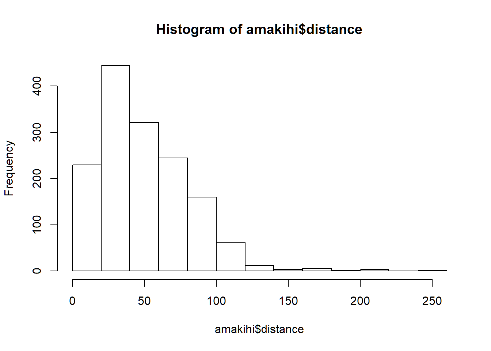
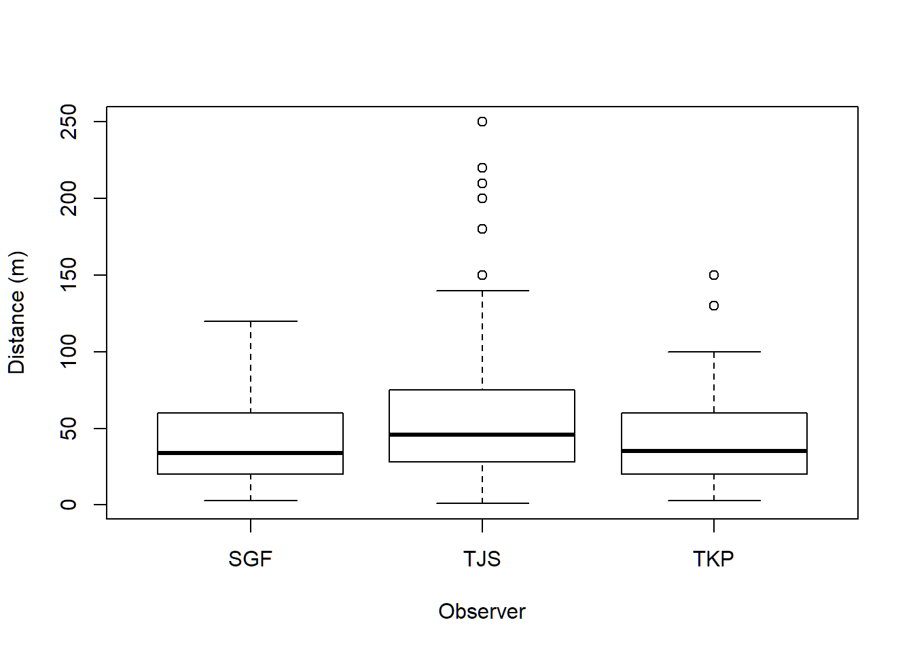
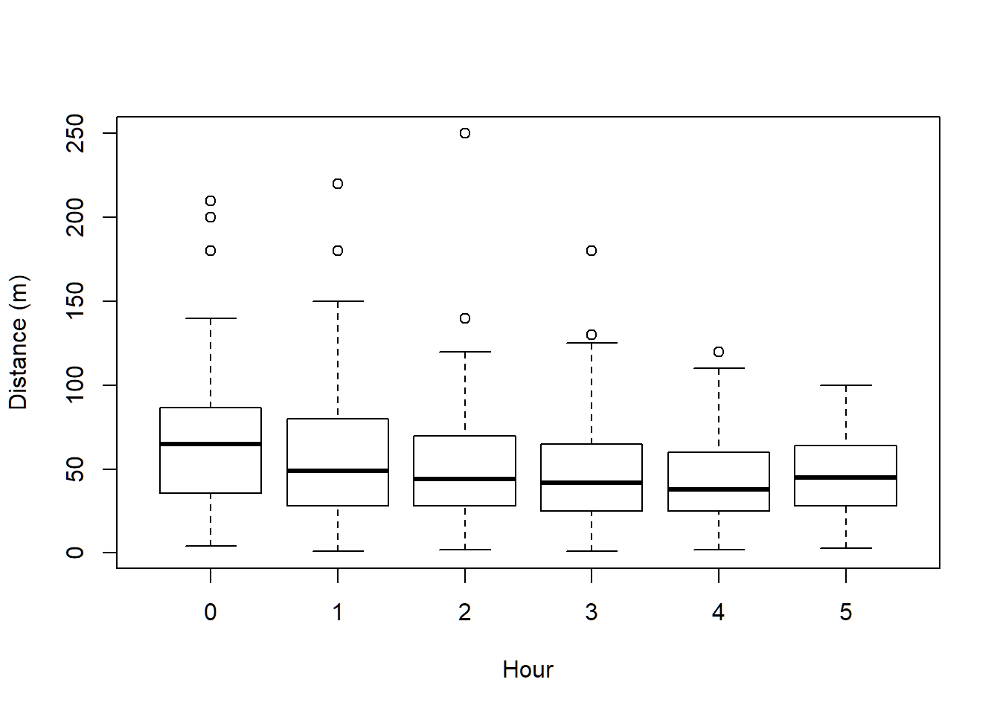
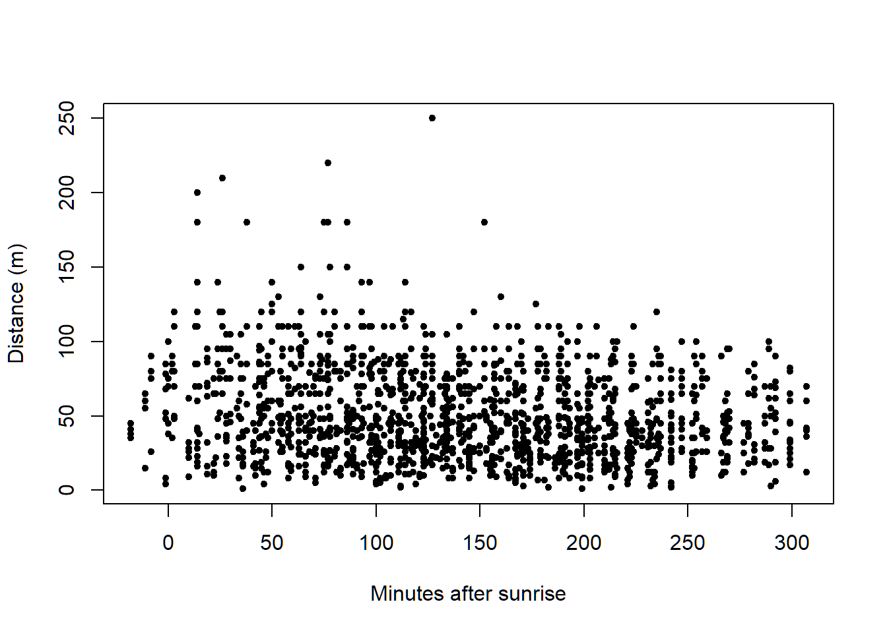
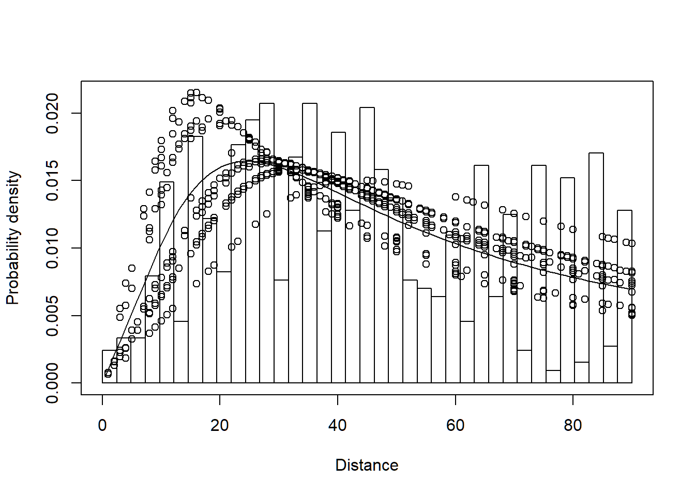

Covariates in point transect detection functions: Amakihi
In this problem, we illustrate fitting multiple covariate distance sampling (MCDS) models to point transect data using a bird survey from Hawaii: data on an abundant species, the Hawaii amakihi (Hemignathus virens) is used. This practical is makes use of the Distance R package described by Miller et al. (2019) duplicating the analysis in Marques et al. (2007). This set of data is included in Distance as one of the Sample Projects and so can be accessed easily:
library(Distance)
data(amakihi)
head(amakihi, n=3)These data include:
Region.Label - survey dates (month and year, e.g. 792 is July 1992) which are used as ‘strata’Area - study area size (not used, set to 0) will only produce density estimates, not abundanceSample.Label - point transect identifier (41 transects)Effort - survey effort (1 for all points because each point was visited once)distance - radial distance of detection from observer (meters)month -OBs - initials of the observerSp - species code (COAM)MAS - minutes after sunriseHAS - hour after sunriseStudy.Area - name of the study area (Kana)Note that the Area column is always zero, hence, detection functions can be fitted to the data, but bird abundance cannot be estimated. The covariates to be considered for possible inclusion into the detection function are OBs, MAS and HAS.
It is important to gain an understanding of the data prior to fitting detection functions. With this in mind, preliminary analysis of distance sampling data involves:
We begin by assessing the distribution of distances to decide on a truncation distance.
hist(amakihi$distance)To see if there are differences in the distribution of distances recorded by the different observers and in each hour after sunrise, boxplots can be used. Note how the ~ symbol is used to define the discrete groupings (i.e. observer and hour).
boxplot(amakihi$distance~amakihi$OBs, xlab="Observer", ylab="Distance (m)")
boxplot(amakihi$distance~amakihi$HAS, xlab="Hour", ylab="Distance (m)")The components of the boxplot are:
For minutes after sunrise (a continuous variable), we create a scatterplot of MAS (on the \(x\)-axis) against distances (on the \(y\)-axis). The plotting symbol (or character) is selected with the argument pch:
plot(x=amakihi$MAS, y=amakihi$distance, xlab="Minutes after sunrise",
ylab="Distance (m)", pch=20)Clearly room for right truncation from this figure of the radial distance distribution. Subsequent detection function fitting will use the truncation argument in ds() to exclude the largest 10% of the detection distances.
You may also want to think about potential collinearity (linear relationship) between the covariates - if collinear variables are included in the detection function, they will be explaining some of the same variation in the distances and this will reduce their importance as a potential covariate. How might you investigate the relationship between HAS and MAS?
From these plots can you tell if any of the covariates will be useful in explaining the distribution of distances?
We would like to treat OBs and HAS as factor variables as in the original analysis; OBs is, by default, treated as a factor variable because it consists of characters rather than numbers. HAS, on the other hand, consists of numbers and so by default would be treated as a continuous variable (i.e. non-factor). That is fine if we want the effect of HAS to be monotonic (i.e. detectability either increases or decreases as a function of HAS). If we want HAS to have a non-linear effect on detectability, then we need to indicate to R to treat it as a factor as shown below.
amakihi$HAS <- factor(amakihi$HAS)One other, more subtle adjustment, is a transformation of the continuous covariate MAS. We are considering three possible covariates in our detection function: OBs, HAS and MAS. The first two variables, OBs and HAS, are both factor variables, and so, essentially, we can think of them as taking on values between 1 and 3 in the case of OBS, and 1 to 6 in the case of HAS. However, MAS can take on values from -18 (detections before sunrise) to >300 and the disparity in scales of measure between MAS and the other candidate covariates can lead to difficulties in the performance of the optimizer fitting the detection functions in R. The solution to the difficulty is to scale MAS such that it is on a scale (approx. 1 to 5) comparable with the other covariates.
Scaling the continuous covariate MAS makes optimisation to estiamte parameters of the detection function simpler.
amakihi$MAS <- scale(amakihi$MAS)Check what this command has done by looking at a summary of the adjusted MAS:
summary(amakihi$MAS)With three potential covariates, there are 8 possible models for the detection function:
Even without considering covariates there are also several possible key function/adjustment term combinations available: if all key function/covariate combinations are considered the number of potential models is large. Note that covariates are not allowed if a uniform key function is chosen and if covariate terms are included, adjustment terms are not allowed. Even with these restrictions, it is not best practice to take a scatter gun approach to detection function model fitting. Buckland et al. (2015) considered 13 combinations of key function/covariates. Here, we look at a subset of these.
Fit a hazard rate model with no covariates or adjustment terms and make a note of the AIC. Note, that 10% of the largest distances are truncated - you may have decided on a different truncation distance.
conversion.factor <- convert_units("meter", NULL, "hectare")
amak.hr <- ds(amakihi, transect="point", key="hr", truncation="10%",
adjustment=NULL, convert.units = conversion.factor)Make a note of the AIC for this model.
Now fit a hazard rate model with OBs as a covariate in the detection function and make a note of the AIC. Has the AIC reduced by including a covariate?
amak.hr.obs <- ds(amakihi, transect="point", key="hr", formula=~OBs,
truncation="10%", convert.units = conversion.factor)Fit a hazard rate model with OBs and HAS in the detection function:
amak.hr.obs.has <- ds(amakihi, transect="point", key="hr", formula=~OBs+HAS,
truncation="10%", convert.units = conversion.factor)Try fitting other possible formula and decide which model is best in terms of AIC. To quickly compare AIC values from different models, use the AIC command as follows (note only models with the same truncation distance can be compared):
AIC(amak.hr, amak.hr.obs, amak.hr.obs.has)Another useful function is summarize_ds_models - this has the advantage of ordering the models by AIC (smallest to largest).
summarize_ds_models(amak.hr, amak.hr.obs, amak.hr.obs.has, output = "plain")Examine the shape of the preferred detection function (including covariates observer and hours after sunrise) by plotting
plot(amak.hr.obs.has, pdf=TRUE)Marques, T.A., L. Thomas, S.G. Fancy and S.T. Buckland. (2007) Improving estimates of bird density using multiple-covariate distance sampling. The Auk 124 (4): 1229–1243. https://doi.org/10.1642/0004-8038(2007)124[1229:IEOBDU]2.0.CO;2.
Miller DL, Rexstad E, Thomas L, Marshall L, Laake JL (2019) Distance Sampling in R. Journal of Statistical Software 89(1), 1-28. doi:10.18637/jss.v089.i01 http://doi.org/10.18637/jss.v089.i01.
library(Distance)
data(amakihi)
hist(amakihi$distance)
boxplot(amakihi$distance~amakihi$OBs, xlab="Observer", ylab="Distance (m)")
boxplot(amakihi$distance~amakihi$HAS, xlab="Hour", ylab="Distance (m)")
plot(x=amakihi$MAS, y=amakihi$distance, xlab="Minutes after sunrise",
ylab="Distance (m)", pch=20)
amakihi$HAS <- factor(amakihi$HAS)
amakihi$MAS <- scale(amakihi$MAS)
summary(amakihi$MAS)## V1
## Min. :-2.08724
## 1st Qu.:-0.82597
## Median :-0.05081
## Mean : 0.00000
## 3rd Qu.: 0.76376
## Max. : 2.18270
## NA's :2conversion.factor <- convert_units("meter", NULL, "hectare")
amak.hr <- ds(amakihi, transect="point", key="hr", truncation="10%",
adjustment=NULL, convert.units = conversion.factor)
amak.hr.obs <- ds(amakihi, transect="point", key="hr", formula=~OBs,
truncation="10%", convert.units = conversion.factor)
amak.hr.obs.has <- ds(amakihi, transect="point", key="hr", formula=~OBs+HAS,
truncation="10%", convert.units = conversion.factor)
AIC(amak.hr, amak.hr.obs, amak.hr.obs.has)## df AIC
## amak.hr 2 12000.67
## amak.hr.obs 4 11969.82
## amak.hr.obs.has 9 11972.67summarize_ds_models(amak.hr, amak.hr.obs, amak.hr.obs.has, output = "plain")## Model Key function Formula C-vM $p$-value Average detectability
## 2 amak.hr.obs Hazard-rate ~OBs 0.1256826 0.2743790
## 3 amak.hr.obs.has Hazard-rate ~OBs + HAS 0.2337446 0.2802722
## 1 amak.hr Hazard-rate ~1 0.1600790 0.2852838
## se(Average detectability) Delta AIC
## 2 0.02080831 0.00000
## 3 0.02031863 2.84850
## 1 0.02007204 30.84868plot(amak.hr.obs.has, pdf=TRUE)
HAS. The detection function of the observer with the majority of the detections can be seen clearly as the rows of detections beyond 40m above the solid line. If you look closely, you can see six circles representing each of the hours after sunrise. This observer’s PDF is above the PDF of the other two observers. Their PDF peaks at ~20m and rapidly diminishes thereafter, whereas the PDF of the observer with the most detections peaks at ~35m and declines more slowly thereafter.